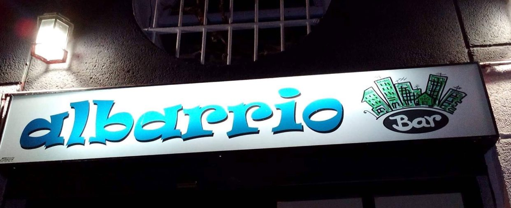
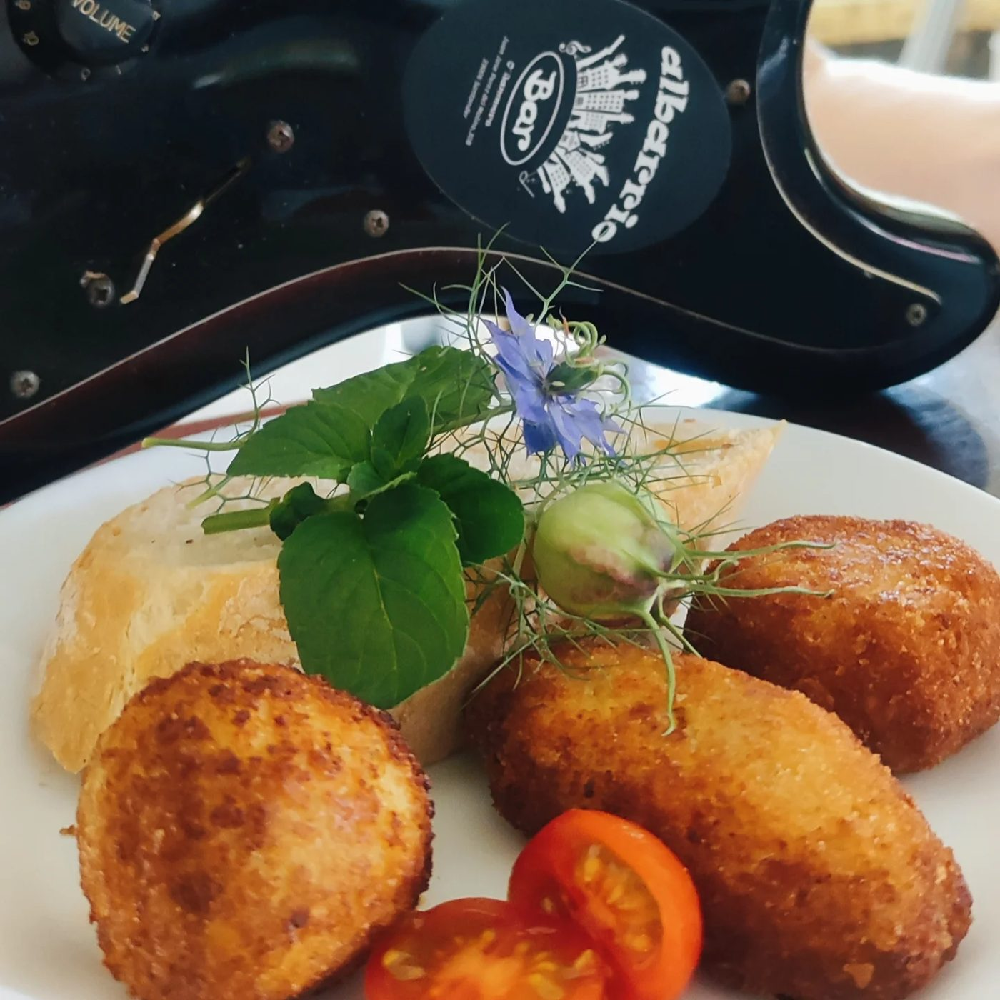
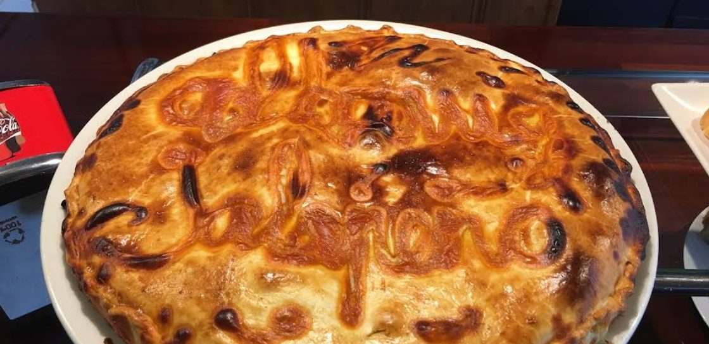
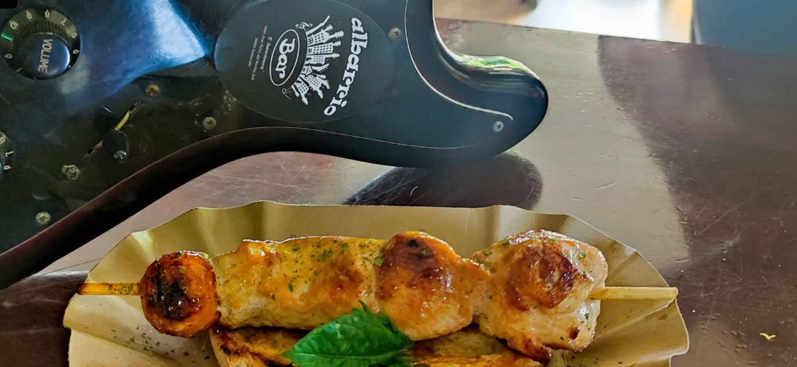
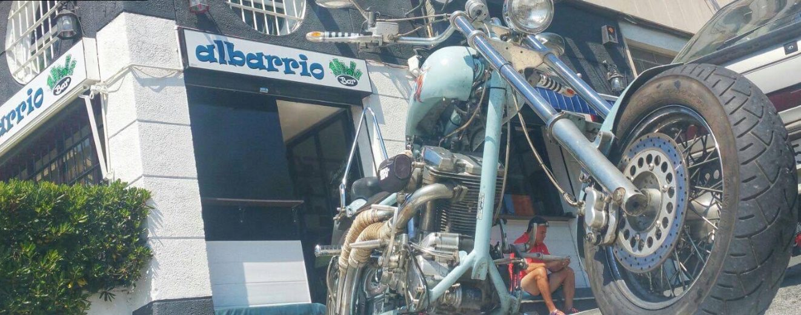

Contacto
HABLEMOS
Todos los datos del bar, cómo llegar y dónde seguirnos.
Dónde estamos
C. Juan José Pérez del Molino, 30, Bajo39006 Santander, Cantabria
Teléfono
Horario
Lunes, jueves, viernes, sábado y domingo
12:00 a 24:00
Martes y miércoles cerrado
Consulta nuestro horario
Opiniones
LO QUE DICEN
DE ALBARRIO
Opiniones de nuestros clientes en Google
Lee lo que cuentan quienes ya han pasado por aquí, o déjanos tu opinión después de tu visita.
Síguenos
ALBARRIO
EN REDES
Fotos, conciertos y novedades del día a día.





Fotos reales de Albarrio Bar.